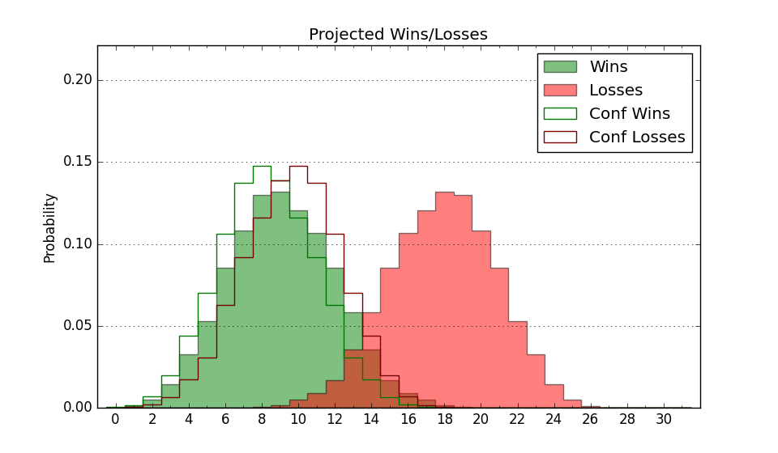

| Home | Game Probabilities | Conferences | Preseason Predictions | Odds Charts | NCAA Tournament |
| City: | Tallahassee, Florida | |
| Conference: | Southwest (1st)
| |
| Record: | 0-0 (Conf) 0-4 (Overall) | |
| Ratings: | Comp.: -17.0 (342nd) Net: -14.2 (292nd) Off: 98.8 (250th) Def: 113.0 (299th) SoR: 0.0 (275th) |
| Remaining | ||||||
|---|---|---|---|---|---|---|
| Date | Opponent | Win Prob | Pred. | |||
| 11/29 | @ Clemson (22) | 1.1% | L 56-86 | |||
| 12/3 | Presbyterian (215) | 36.5% | L 68-72 | |||
| 12/17 | @ Utah (70) | 2.9% | L 62-88 | |||
| 12/20 | @ BYU (37) | 1.7% | L 61-90 | |||
| 12/29 | @ Tarleton St. (327) | 31.4% | L 63-69 | |||
| 1/4 | Bethune Cookman (326) | 60.8% | W 71-68 | |||
| 1/11 | @ Southern (250) | 18.9% | L 64-74 | |||
| 1/13 | @ Grambling St. (263) | 20.3% | L 63-72 | |||
| 1/18 | Arkansas Pine Bluff (356) | 74.1% | W 81-74 | |||
| 1/20 | Mississippi Valley St. (364) | 89.5% | W 74-59 | |||
| 1/25 | @ Alcorn St. (349) | 40.9% | L 69-72 | |||
| 1/27 | @ Jackson St. (337) | 33.6% | L 71-75 | |||
| 2/1 | Alabama A&M (351) | 70.4% | W 74-67 | |||
| 2/3 | Alabama St. (249) | 43.8% | L 68-69 | |||
| 2/8 | @ Texas Southern (268) | 21.6% | L 66-75 | |||
| 2/10 | @ Prairie View A&M (339) | 34.6% | L 71-75 | |||
| 2/15 | Jackson St. (337) | 63.3% | W 75-71 | |||
| 2/17 | Alcorn St. (349) | 70.2% | W 73-68 | |||
| 2/22 | @ Alabama St. (249) | 18.6% | L 63-74 | |||
| 2/24 | @ Alabama A&M (351) | 41.1% | L 69-72 | |||
| 3/1 | Grambling St. (263) | 46.5% | L 67-68 | |||
| 3/3 | Southern (250) | 44.3% | L 68-70 | |||
| 3/8 | @ Bethune Cookman (326) | 31.3% | L 66-72 | |||
| Previous | Game Score | |||||
| Date | Opponent | Win Prob | Result | Off | Def | Net |
| 11/4 | @TCU (60) | 2.4% | L 59-105 | 2.4 | -24.3 | -21.8 |
| 11/7 | @SMU (51) | 2.1% | L 73-102 | 4.0 | -3.5 | 0.5 |
| 11/11 | @Maryland (18) | 0.9% | L 53-84 | 3.3 | 2.2 | 5.5 |
| 11/19 | @Florida (21) | 1.1% | L 60-84 | 0.1 | 8.3 | 8.5 |
| Stats & Trends | |||||
|---|---|---|---|---|---|
| Current | Day | Week | Month | Season | |
| Composite | -17.0 | +0.6 | +1.6 | +1.2 | +1.2 |
| Comp Rank | 342 | +3 | +9 | +6 | +6 |
| Net Efficiency | -14.2 | +1.9 | +5.7 | -- | -- |
| Net Rank | 292 | +10 | +22 | -- | -- |
| Off Efficiency | 98.8 | +2.3 | +0.5 | -- | -- |
| Off Rank | 250 | +23 | -15 | -- | -- |
| Def Efficiency | 113.0 | -0.3 | +5.2 | -- | -- |
| Def Rank | 299 | -1 | +27 | -- | -- |
| SoS Rank | 2 | +3 | +10 | -- | -- |
| Exp. Wins | 9.1 | +0.1 | +0.8 | +0.6 | +0.6 |
| Exp. Conf Wins | 8.3 | +0.3 | +0.8 | +0.7 | +0.7 |
| Conf Champ Prob | 3.5 | +0.2 | +1.0 | +0.2 | +0.2 |

| Advanced Stats | ||
|---|---|---|
| Stat | Value | Rank |
| Off Eff FG % | 0.483 | 221 |
| Off Ast Ratio | 0.132 | 225 |
| Off ORB% | 0.241 | 273 |
| Off TO Rate | 0.161 | 241 |
| Off FT Ratio | 0.457 | 41 |
| Def Eff FG % | 0.515 | 209 |
| Def Ast Ratio | 0.181 | 344 |
| Def ORB% | 0.291 | 203 |
| Def TO Rate | 0.094 | 359 |
| Def FT Ratio | 0.303 | 124 |